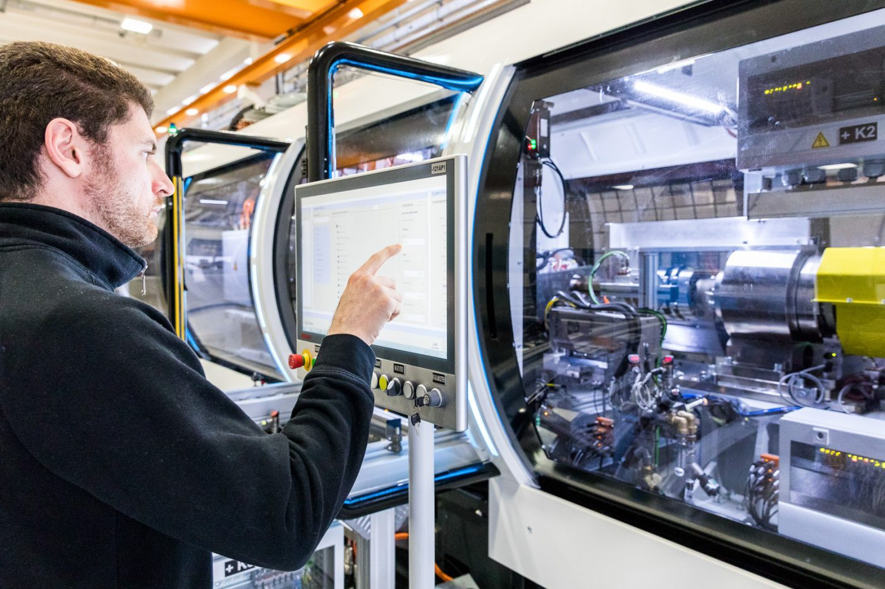
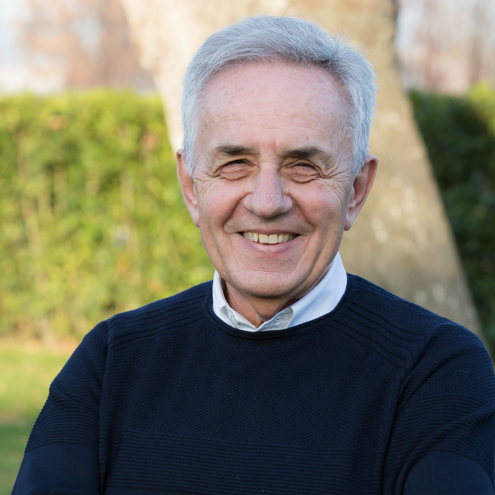

Cosa fa?
Sistemi di misura
Loccioni è un'azienda italiana specializzata in automazione, sviluppa sistemi di misura e controllo per migliorare la qualità e l’efficienza dei processi industriali in diversi settori, con una forte vocazione all’innovazione tecnologica e alla sostenibilità. Fondata nel 1968 da Enrico Loccioni, ha sede principale a Angeli di Rosora, in provincia di Ancona, nelle Marche.

Chi è?

Enrico Loccioni
Nato nel 1949 a Serra San Quirico (Ancona) da una famiglia di agricoltori, Enrico Loccioni è un imprenditore italiano, fondatore e presidente del Gruppo Loccioni. È una figura stimata nel panorama industriale per aver trasformato una piccola attività artigianale in un'eccellenza internazionale, guidato dalla filosofia dell'"impresa come bene comune", un modello che mette al centro le persone, l'ambiente e il territorio. Per la sua visione etica del fare impresa e per il contributo all'innovazione tecnologica e sociale, nel 2015 è stato insignito del titolo di Cavaliere del Lavoro dal Presidente della Repubblica Sergio Mattarella.
La mia esperienza
BLU ZONE
La “Blue Zone” di Loccioni è un progetto educativo che unisce scuola e lavoro.
L’idea è far vivere ai giovani esperienze pratiche dentro l’azienda,
attraverso laboratori, stage, progetti tecnologici e attività formative,
così da sviluppare competenze tecniche e personali.
Infatti grazie ad essa e la mia scuola superiore Marconi Pieralisi, sono riuscito a crearmi un prezioso bagaglio
culturale, imparando nel vero mondo del lavoro e applicando le mie conoscenze
apprese negli anni di studio a scuola.
COSA ABBIAMO FATTO?
Durante il periodo di studio scolatico, abbiamo praticato corsi pomeridiani direttamente
nell'azineda Loccioni.
La durata di questi corsi era di 4 ore settimanali, per 3 mesi.
Grazie a queste ore siamo riusciti ad apprenderte la struttura a livello organizzativo
e produttivo dell'azienda, con delle attività/lezioni leggere e anche divertenti, mettendo subito
in atto le nostre conscenze.
OBBIETTIVO?
Ci è stata lanciata la sfida dall'azzienda Loccioni di creare due bachi test inniettori per
la Magneti marelli, applicando le nostre conoscenze ottenute a scuola e con il periodo
di alternanza scuola-lavoro.
Ci siamo in due macro gruppi, uno per ogni banco, poi ci siamo di nuovo divisi in mocrogruppi
separati per la nostra funzione e percorso di studio, ovvero: informatico, elettro tecnico e
meccanico.
Al termine del periodo di costruzione e programazione è arrivato il giorno della convalida
del banco e se sarebba stato in grado di ripettare tutte le richieste accordate con il cliente
(MM).
Dopo uno scrupoloso ceck delle operazioni e dei parametri accordati del baco, è passato positivamente
e questo ci ha reso veramnete orgogliosi e soddisfatti dei nostri sforzi.